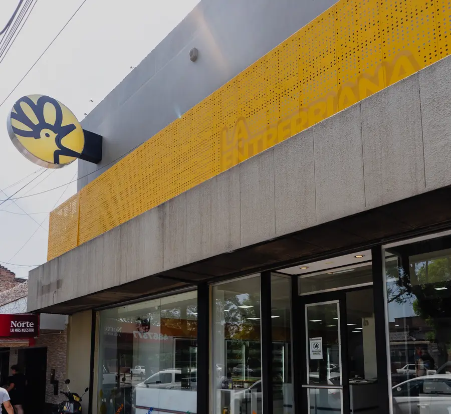

InicioSucursales
Sucursales
San Miguel de Tucumán, Concepción y Monteros. Retirá tu pedido o recibilo en tu casa al día siguiente.

Reparto
De 8 a 20 h, al día siguiente del pedido.
Gran San Miguel de Tucumán y sur de la provincia, con camiones propios.
Hacé el pedido desde el catálogo y mandalo por WhatsApp a la sucursal que elijas.
Armar mi pedido